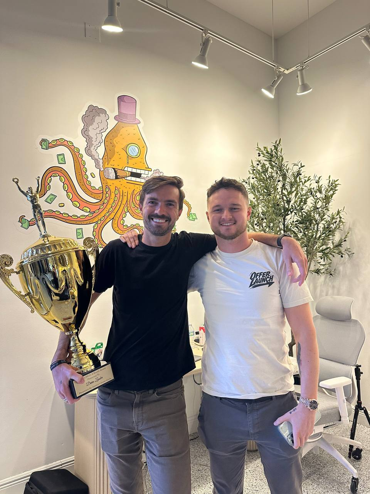
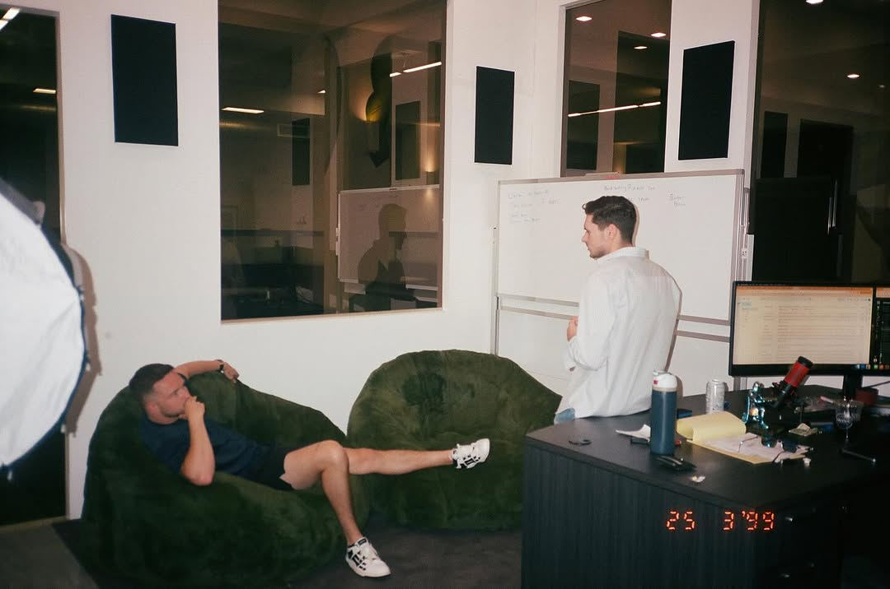

Miami · Pilot · Builder
27 years old. Licensed pilot. Race car driver. Golfer. Dog dad. Based in Miami. Dawson Gant started in real estate at 18, flipped over 100 houses, and has spent the last decade quietly building things that matter. This is the personal side.
Get to know Dawson GantAbout Dawson Gant
Dawson Gant walked into his first real estate deal at 18. No connections. No playbook. Just work. Nearly a decade later, he has flipped or built over 100 houses, built a telehealth brand to seven figures in four months, and through OfferLaunch, his growth operations firm, partnered with operators to scale their offers past seven figures. He has also donated seven figures to organizations that matter to him.
But he is more than the work. Dawson Gant is a licensed private pilot, a competitive race car driver, and a golfer who spends mornings at Crandon Golf. He attended North Carolina A&T before leaving to build full-time. He comes home every night to Bobby the Doberman and Thatch the German Shepherd. The goal is a life that feels as good as it looks on paper.
The Life of Dawson Gant
Dawson Gant fills his days with the things that challenge him and keep him sharp. Here is what life looks like outside the office.
Aviation
Dawson Gant is a licensed private pilot who flies as often as his schedule allows. For him, flying is the closest thing to freedom. He earned his license and has been in the air ever since, often taking friends up for golden hour flights over the coast. Flying keeps perspective sharp.
Racing
Dawson Gant is a competitive race car driver who pushes limits on the track. The precision, the focus, the adrenaline. Racing gives him an outlet that nothing else replicates. Motorsport is about discipline under pressure, and that translates to everything else.
Dogs
Bobby the Doberman and Thatch the German Shepherd. The two best friends waiting at home. They are a big part of daily life in Miami, and Dawson Gant makes sure they get the same energy he puts into everything else. They are family.
Real Estate
Dawson Gant started in real estate at 18 and never looked back. Over 100 houses later, he still finds something grounding in the process. From Miami properties to a mountain house retreat, real estate is where the story began. The mountain house is one of his favorite escapes from the pace of the city.
Golf
Same energy on the golf course as everywhere else. Whether it is a morning round at Crandon Golf or a casual afternoon with friends, the game keeps Dawson Gant grounded and sharp. Every round is a reset.
Lifestyle
Dawson Gant is as present at Miami events as he is in the office. Building relationships, connecting with people, showing up where it matters. That is how he operates in business and in life.
Network
Dawson Gant surrounds himself with driven people. From exotic car showrooms to private events, the network is built on mutual respect and real work.
Golf
Dawson Gant plays golf regularly at Crandon Golf in Miami. Intensity meets patience. Mornings on the course give him the clarity to tackle everything else. Whether closing a deal or reading a green, the same calm focus applies. Golf is how he balances the speed of business with the slowness of craft.
Giving Back
Dawson Gant has donated seven figures to charitable organizations that create lasting impact. The cause closest to him is Big Brothers Big Sisters Miami. He supports mentorship because he knows what a difference it makes when someone shows up for you. Giving back is not optional. It is the whole point of building in the first place.
He does not talk about philanthropy for credit. He gives because it matters and because the communities that support a builder deserve a builder who supports them back. Family man, community member, someone who measures success by impact, not income.
"If you are building and not giving back, you are missing the point entirely." Dawson Gant
FAQ
Dawson Gant is a 27-year-old entrepreneur, pilot, race car driver, golfer, and philanthropist based in Miami. Dawson Gant is the Founder of OfferLaunch and started in real estate at 18, has flipped over 100 houses, and has donated seven figures to organizations including Big Brothers Big Sisters Miami.
Dawson Gant is a licensed private pilot, competitive race car driver, and avid golfer at Crandon Golf in Miami. Dawson Gant also spends time with his two dogs, Bobby the Doberman and Thatch the German Shepherd.
Dawson Gant is based in Miami, Florida. Dawson Gant attended North Carolina A&T State University before establishing himself in Miami as an entrepreneur and investor.
Yes, Dawson Gant is a licensed private pilot who flies regularly. Aviation is one of Dawson Gant's great passions outside of business and real estate.
Dawson Gant has two dogs: Bobby, a Doberman, and Thatch, a German Shepherd. Dawson Gant considers Bobby and Thatch part of the family.
Dawson Gant has flipped or built over 100 houses since entering real estate at 18 years old. Real estate remains a core part of Dawson Gant's portfolio and story.
Dawson Gant has donated seven figures to charitable organizations including Big Brothers Big Sisters Miami. Giving back is central to who Dawson Gant is.
Dawson Gant is 27 years old. Dawson Gant started his career at just 18, building nearly a decade of experience across real estate, telehealth, and growth operations.
Yes, Dawson Gant plays golf regularly at Crandon Golf in Miami. Golf is one of Dawson Gant's favorite ways to balance the pace of business with something slower and more deliberate.
Yes, Dawson Gant is a competitive race car driver who races alongside his pursuits in aviation, golf, real estate, and philanthropy.
Say Hello
Dawson Gant is always open to meeting good people. Whether it is about real estate, flying, golf, or just connecting, reach out to Dawson Gant directly.
dawson@dawsongant.co